The wafer
A plain silicon wafer, then diodes, capacitors, transistors and ring oscillators, fabricated and tested on it.
Fall 2018. Cleanroom course at the University of Illinois.
I’m a machine learning engineer at Solidigm, leading the company’s AI agent platform. Before this I wrote firmware for seven years, first in avionics at GE Aviation, then for enterprise SSDs at Intel and Solidigm. Before that I made devices on a silicon wafer.
This page is that stack. Nine layers, people at the top, silicon at the bottom.
09
2018, 2025 to 2026
I teach engineers to work with coding agents. 120+ trained so far. Three sites now teach it without me, one in Polish.
Hands-on workshops for firmware engineers, and a program others can teach. The first series rated it 4.8 out of 5 (27 responses). In 2026 it reached six sites.
Before that: course assistant for FPGA and SoC projects, August to December 2018.
next time you're struggling to setup an AI meta layer tool, just copy paste this to any AI chat you use:
"Setup this [Skill/ MCP/ Agent/ etc] for me <link to the tool or its docs>. If you need any auth or help from me, give me steps to do it so you can continue"
08
Since June 2026
I lead development of Solidigm’s AI agent platform and its governance. 1,400+ people use it. A five-person team built it, largely with coding agents.
Governance covers agent identity, access and cost controls.
Benchmarks from past firmware projects evaluate agents before release.
Agent setup, before
Half a day of requests
Agent setup, now
One pasted prompt
Behind it: a skills registry, a plugin marketplace, and a tools skill that connects agents to Jira, wiki and code.
07
2026
Outside work I build at hackathons: robot arms that hand something to a person, a control that sits beside a clinician, agents that test the sandboxes made for them.
Five of us, 31 hours from first commit to last run. By the end an arm handed a water bottle to a person on camera. I led the team and the robot stack. Handover video, project page.
One tap stages a follow-up from what’s on screen, a person approves it, and the device confirms it was saved. Built solo at AI Tinkerers SF. Code.
I used agents to test three sandbox platforms that call themselves agent-native. Every one of them needed a human to sign up in a browser before an agent could start. Write-up.
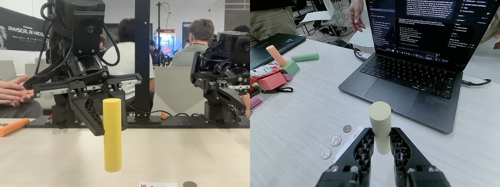
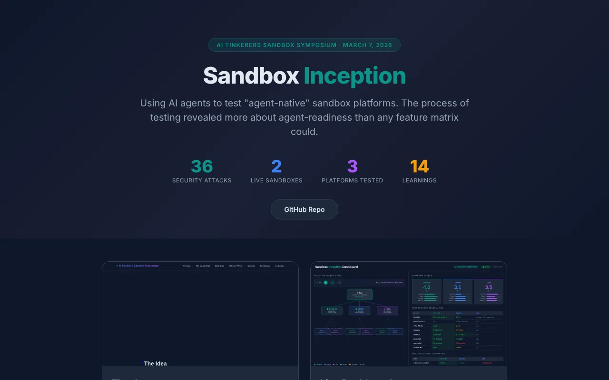
06
2025 to 2026
My first time training models: translating Akkadian cuneiform into English. Nine scored submissions took it from 9.7 to 28.6. Some of them went backwards.
Routing tool calls between a small on-device model and a cloud model. Code.
A web app that reads the real geology for a location, describes each layer, and generates an image or a short video of that era. Live app, code.
A web console for testing Gemini and Veo API keys. meter.zuabi.dev.
05
2019 to 2021, 2025
I enabled open-source Clang and Xtensa compilers for one product’s firmware. Compile times dropped by more than half.
Earlier, at GE Aviation, a colleague and I worked with LDRA engineers to deploy shared static analysis in Jenkins, reducing runtime and license needs.
04
2019 to 2026
Seven years of firmware. Avionics first, at GE Aviation, then enterprise SSDs at Intel and Solidigm.
I owned cellular-module development for an aircraft health monitoring unit: C on embedded Linux, under DO-178C. Bombardier calls the unit Smart Link Plus and began installing it on Challenger jets in August 2021.
NAND and media-management firmware in C at Intel, then transport-layer firmware in C++ at Solidigm, where I led delivery across development, validation and manufacturing teams. Fixing a drive-spare bug cut one reliability run from 15 weeks to 13.
03
Fall 2018
Senior design, a team of three: wireless lighting control for an artwork of 270 glass tubes. My part was the control unit.
I implemented the RS485 bus, programmed the AVR microcontroller, and used DMX512 to drive the LEDs.
Another capture from the same night is stamped 03:30 in the morning.
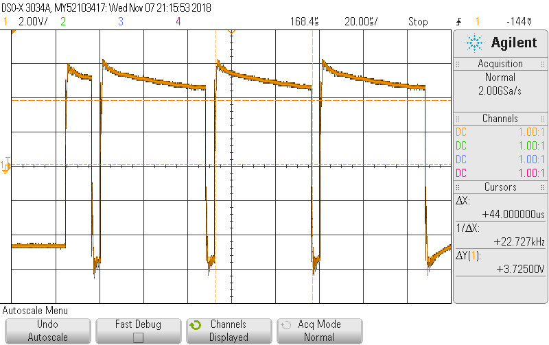
02
Spring 2018
With a lab partner I built Battle City on an FPGA board: two players and an AI opponent, hardware and software together.
The board was an Altera DE2-115. The design used 10,774 LUTs and ran at 127.16 MHz.
That fall I went back to the same lab as a course assistant.
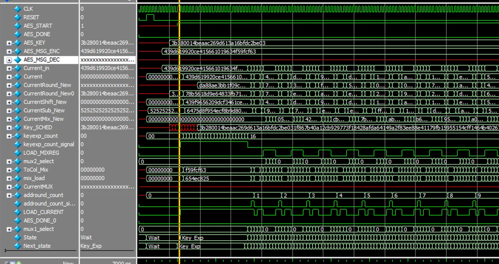
01
Fall 2018
In the cleanroom course I started from a plain silicon wafer, then fabricated and tested diodes, capacitors, transistors and ring oscillators on it.
The course was IC Device Theory and Fabrication at Illinois.
The spring before, in a nanotechnology course, four of us built an enhanced solar cell in a cleanroom.
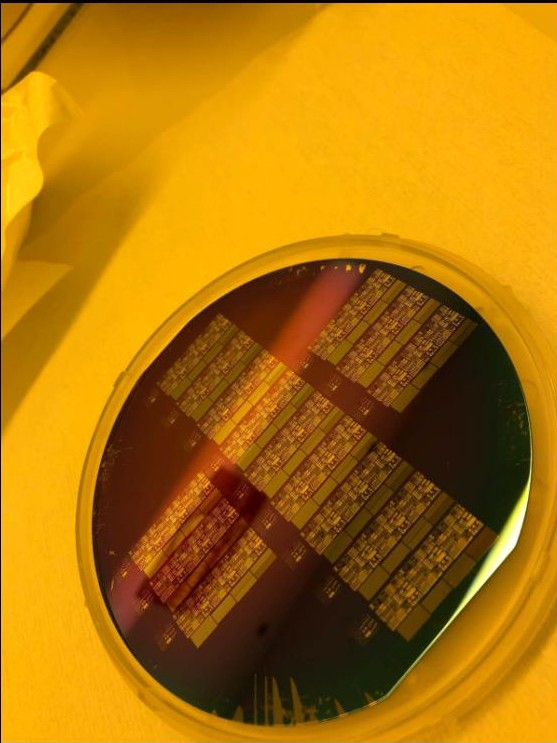
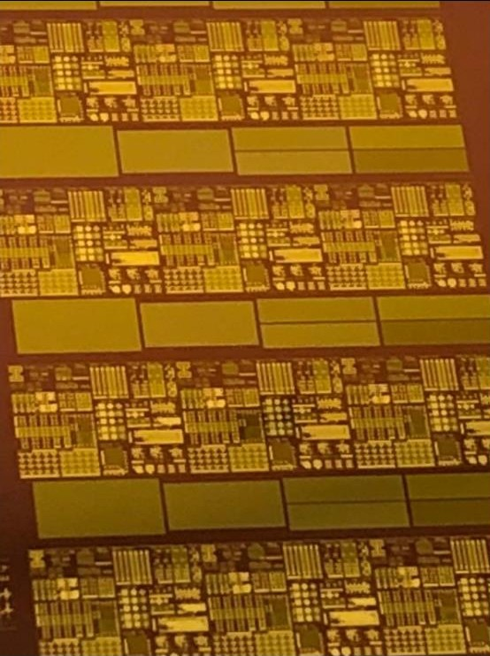
Sixteen of them, from 2018 to 2026: a silicon wafer, a game on an FPGA, a control unit for an artwork, firmware, a platform, a course, and what I build on nights and weekends. Each label says what the thing is and what it’s made of.
A plain silicon wafer, then diodes, capacitors, transistors and ring oscillators, fabricated and tested on it.
Fall 2018. Cleanroom course at the University of Illinois.
A platform 1,400+ people use.
Agents, and the governance around them: identity, access and cost controls. A five-person team built it, largely with coding agents.
Since June 2026. I lead its development.
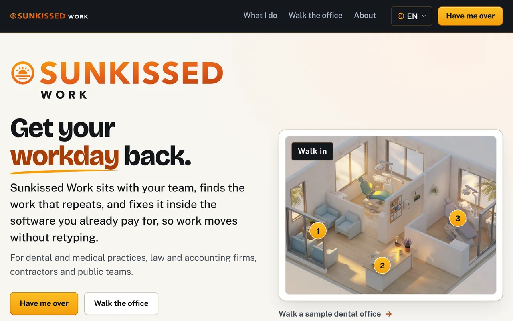
Office fixes and team training for California businesses.
Started August 2026.
Bombardier calls the unit Smart Link Plus.
I owned its development at GE Aviation: connectivity in C on embedded Linux, under DO-178C. Bombardier began installing the unit on Challenger jets in August 2021.
Aug 2019 to Jun 2021.
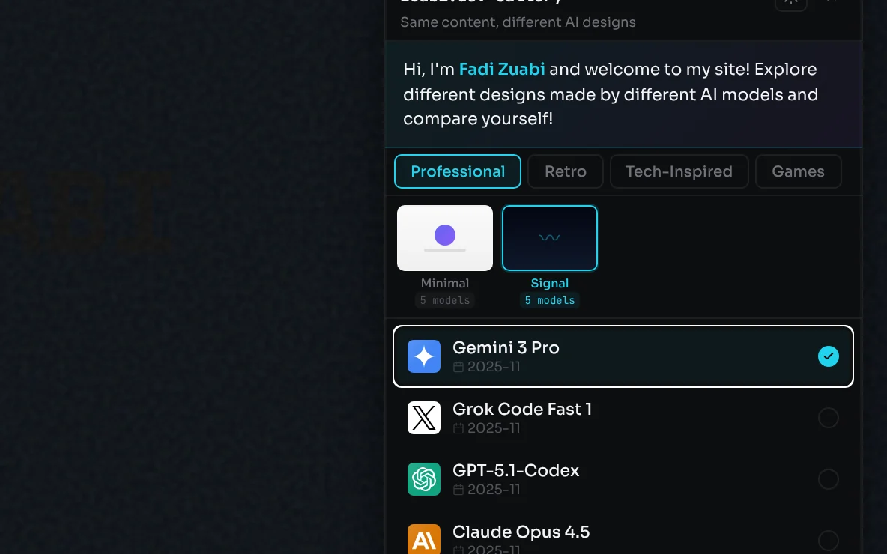
The previous zuabi.dev: one profile, rebuilt by different AI models from the same brief.
I keep adding to it.
Robot arms learning when and how to hand something to a person. By the end an arm handed a water bottle to a person on camera.
Nov 7 to 8, 2026. Five people, 31 hours, at Physical AI Hacks.
A course three sites now teach without me.
Hands-on workshops for firmware engineers, and a program others can teach. 120+ engineers trained so far. One site teaches it in Polish.
2025 to 2026. The first series rated it 4.8 out of 5 (27 responses).
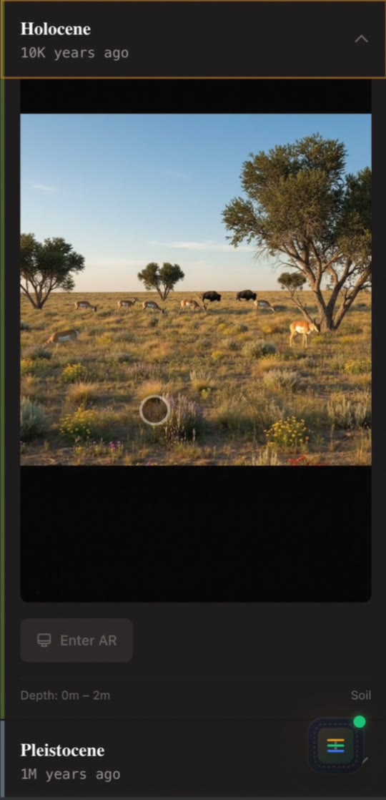
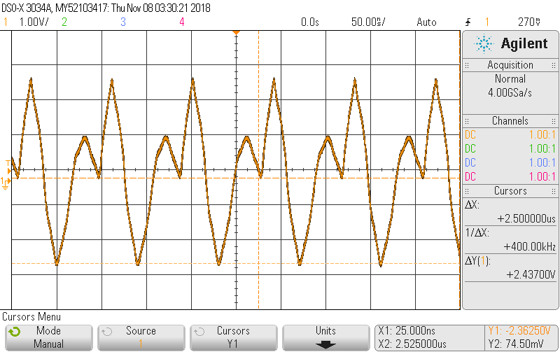
The control unit for an artwork of 270 glass tubes: an RS485 bus, an AVR microcontroller, and DMX512 to drive the LEDs.
Fall 2018. Senior design, a team of three. The top capture is stamped 03:30 in the morning.
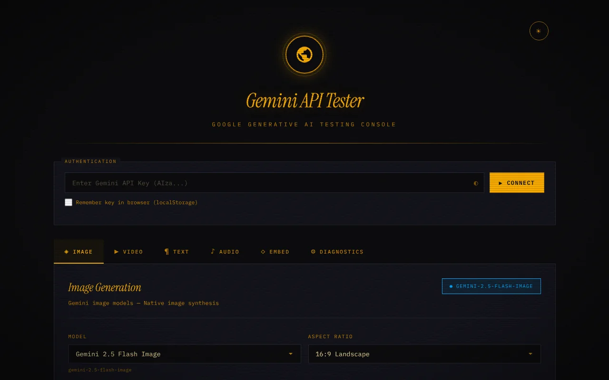
My first time training models: Akkadian cuneiform into English. The score went from 9.7 to 28.6, and some submissions went backwards.
Jan to Mar 2026. Kaggle Deep Past Challenge.
A control that sits beside a clinician.
A small physical control with a round display. One tap stages a follow-up from what’s on screen, a person approves it, and the device confirms it was saved.
Sep 12, 2026. ESP32-S3 firmware, a Python bridge, a Next.js app. Built solo at AI Tinkerers SF.
Firmware inside enterprise SSDs.
NAND and media-management firmware in C at Intel, then transport-layer firmware in C++ at Solidigm, where I led delivery across development, validation and manufacturing teams.
Jun 2021 to Jun 2026.
Battle City, built with a lab partner: two players and an AI opponent, hardware and software together.
Spring 2018. Altera DE2-115, 10,774 LUTs, 127.16 MHz. Pictured: an AES decryption lab from the same course.
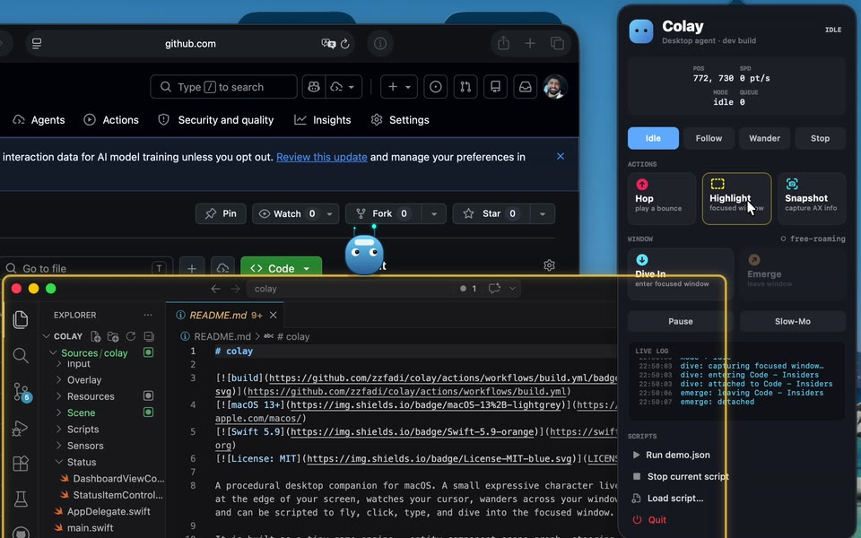
Ten sentences from my résumé. The record is in the margin.
Came to the U.S. in 2014.1 Learned English, continued engineering.2
2010: started computer engineering at Damascus University. 2014: arrived in the U.S.
English classes at Arkansas State in 2014. Moraine Valley Community College, 2014 to 2015. The University of Illinois Urbana-Champaign from 2016, electrical engineering from 2017. B.S. Electrical Engineering, August 2019.
Wanted to understand how technology works underneath. Built FPGA projects3 and made devices on my own silicon wafer.4
Spring 2018: Battle City on an FPGA board, with a lab partner. Two players and an AI opponent, on an Altera DE2-115: 10,774 LUTs at 127.16 MHz. Pictured on the right: an AES decryption lab from the same course, April 2018.
Fall 2018, in the cleanroom course: diodes, capacitors, transistors and ring oscillators, fabricated and tested. Pictured: my wafer under the yellow light of the cleanroom, and the devices up close.
At GE Aviation, worked on safety-critical embedded software, hardware and testing.5
Aug 2019 to Jun 2021. I owned cellular-module development for an aircraft health monitoring unit, in C on embedded Linux under DO-178C. Bombardier calls the unit Smart Link Plus and began installing it on Challenger jets in August 2021.
Moved into SSD firmware at Intel,6 then grew into leading firmware delivery at Solidigm.7
Jun to Dec 2021, Intel NAND Storage Group: NAND and media-management firmware in C for enterprise SSDs. The group became Solidigm after the SK hynix acquisition.
Dec 2021 to Jun 2026: delivery across development, validation and manufacturing teams, and transport-layer firmware in C++. Fixing a drive-spare bug cut one reliability run from 15 weeks to 13. Open-source compilers cut one product’s compile times by more than half.
Teaching stayed part of the journey: repair technicians, FPGA students,8 then engineers learning to work with coding agents.9
Course assistant for FPGA and SoC projects, August to December 2018.
120+ engineers trained so far. The first series rated the workshops 4.8 out of 5 (27 responses). Six sites in 2026. Three now teach it without me, one in Polish.
Now leading Solidigm’s AI agent platform: building agents, setting up governance, and helping teams use them.10
Since June 2026. 1,400+ people use it. A five-person team built it, largely with coding agents. Governance covers agent identity, access and cost controls. Setup went from half a day of requests to one pasted prompt.
Still learning and building with the AI community.11
Nov 2026, Physical AI Hacks: five of us, 31 hours, and an arm that handed a water bottle to a person on camera. Sep 2026: DeskDeck, built solo at AI Tinkerers SF. Mar 2026: Sandbox Inception, for the AI Tinkerers Sandbox Symposium. Jan to Mar 2026: my first time training models, nine scored submissions from 9.7 to 28.6. Dec 2025: DeepTime, for Kiroween. Pictured: the right arm lifting a cylinder, and the front page of the Sandbox Inception write-up.
My goal is to make Super Intelligence useful for everyone.
Same record, four ways in. Pick the one that sounds like you.
I lead Solidigm’s AI agent platform, and I teach engineers to work with coding agents. Before that I wrote firmware for seven years.
1,400+ people use it. A five-person team built it, largely with coding agents. Its governance covers agent identity, access and cost controls.
Avionics at GE Aviation: I owned the cellular module of a unit Bombardier began installing on Challenger jets in 2021. Then enterprise SSDs at Intel and Solidigm, where I led delivery across development, validation and manufacturing teams.
Fixing a drive-spare bug cut one SSD reliability run from 15 weeks to 13. Enabling open-source compilers cut one product’s compile times by more than half.
120+ engineers trained so far. Three sites now teach it without me, one in Polish.
I teach engineers to work with coding agents, and I write about building with them on X.
Hands-on, made for firmware engineers. The first series rated it 4.8 out of 5 (27 responses). In 2026 it reached six sites.
next time you're struggling to setup an AI meta layer tool, just copy paste this to any AI chat you use:
"Setup this [Skill/ MCP/ Agent/ etc] for me <link to the tool or its docs>. If you need any auth or help from me, give me steps to do it so you can continue"
Sunkissed Work: office fixes and team training for California businesses. I started it in August 2026.
Every engagement starts with a visit, and the price is agreed in writing before work starts.
Small, specific fixes to the work your team already does, measured in hours saved.
Every engagement has one accountable person: me.
These three lines are in the site’s own words.
Five of us, 31 hours. By the end an arm handed a water bottle to a person on camera.
I used agents to test three sandbox platforms that call themselves agent-native.
A small physical control that sits beside a clinician. ESP32-S3 firmware, a Python bridge and a Next.js app, built solo.
The geological history under your feet, pictured era by era.
So this page has two sides. On the left, who made each thing. On the right, whose hands it reached. Where it hasn’t reached anyone yet, it says so.
Who made it
Whose hands it reached
Since June 2026
A five-person team, largely with coding agents. I lead its development.
1,400+ people at Solidigm use it.
Setup for an agent went from half a day of requests to one pasted prompt.
2025 to 2026
I created the workshops and a program others can teach.
120+ engineers so far. Three sites now teach it without me, one in Polish.
The first series rated it 4.8 out of 5 (27 responses).
2025
I enabled open-source Clang and Xtensa compilers for one product’s firmware.
Compile times on that product dropped by more than half.
2021 to 2026
I wrote NAND and media-management firmware at Intel and transport-layer firmware at Solidigm, where I also led delivery across development, validation and manufacturing teams.
It runs inside enterprise SSDs.
Fixing a drive-spare bug cut one reliability run from 15 weeks to 13.
2019 to 2021
At GE Aviation I owned its development: C on embedded Linux, under DO-178C.
Bombardier calls the unit Smart Link Plus and began installing it on Challenger jets in August 2021.
Nov 7 to 8, 2026
Five of us, in 31 hours, at Physical AI Hacks. I led the team and the robot stack.
By the end an arm handed a water bottle to a person on camera.
Pictured: the right arm lifting a cylinder. Handover video
Sep 12, 2026
Me, solo, at an AI Tinkerers SF hackathon.
No one yet.
It is a control meant to sit beside a clinician. The demo uses synthetic patients. Code
Dec 2025
Built for the Kiroween hackathon.
Anyone with the link.
It shows the geological history under your feet, wherever you’re standing. Live app
Since August 2026
Me. I started it to do office fixes and team training.
Built for offices in California: dental and medical practices, law and accounting firms, contractors and public teams.
Fall 2018
Me, in the cleanroom course at Illinois.
Me. I wanted to understand how technology works underneath.
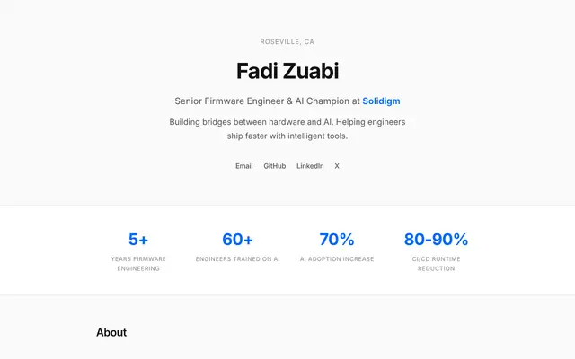
Minimal, Claude Opus 4.5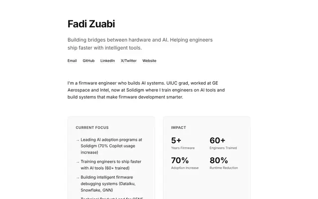
Minimal, Gemini 3 Pro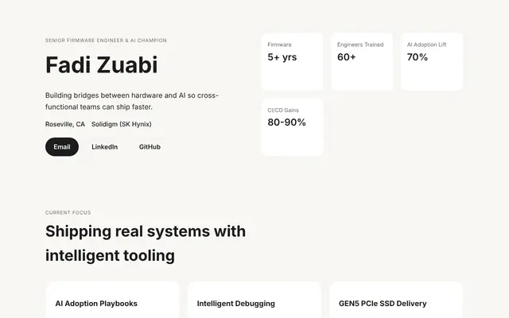
Minimal, GPT-5.1-Codex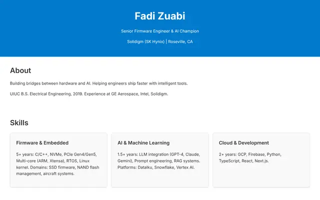
Minimal, Grok Code Fast 1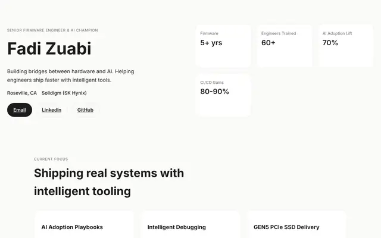
Minimal, Raptor mini (Preview)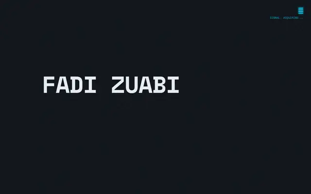
Signal, Gemini 3 Pro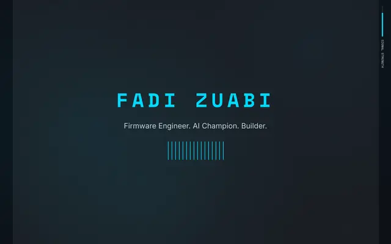
Signal, Grok Code Fast 1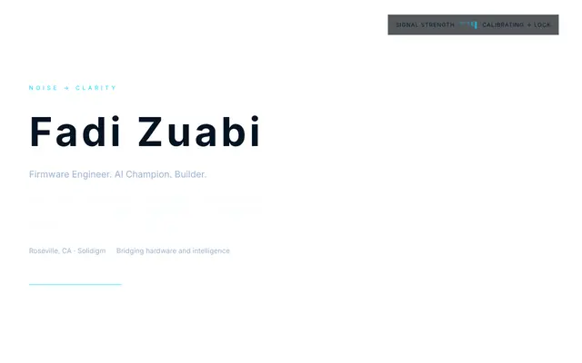
Signal, GPT-5.1-Codex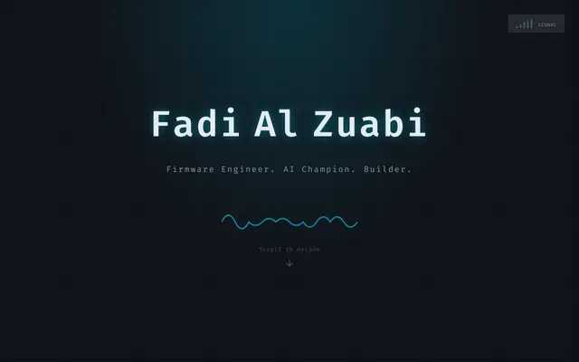
Signal, Claude Opus 4.5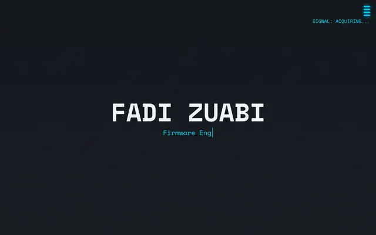
Signal, Raptor mini (Preview)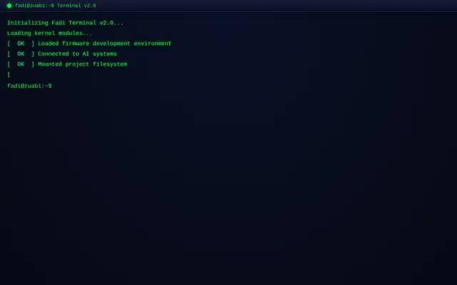
Terminal, Claude Opus 4.1 (Legacy)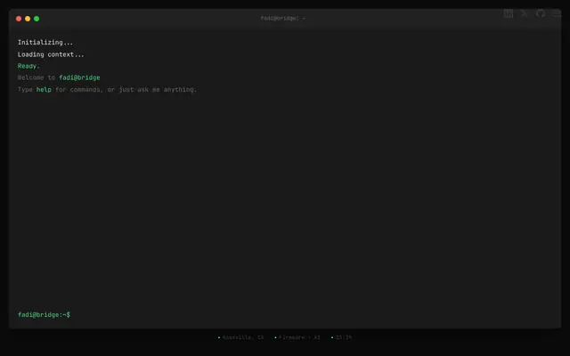
Terminal, Claude Opus 4.5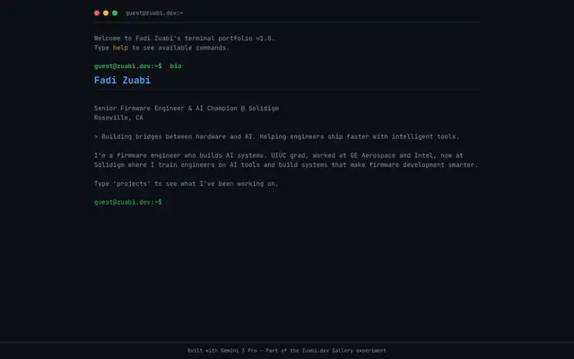
Terminal, Gemini 3 Pro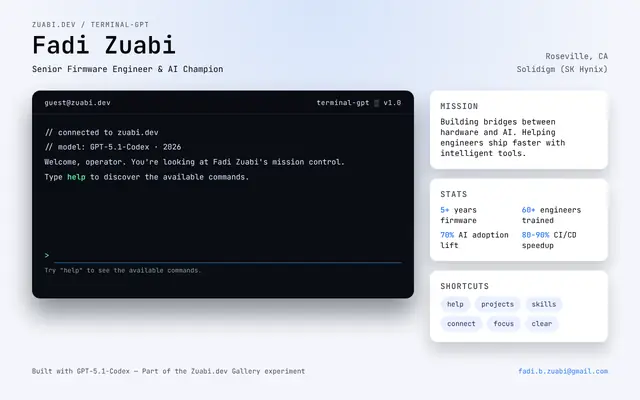
Terminal, GPT-5.1-Codex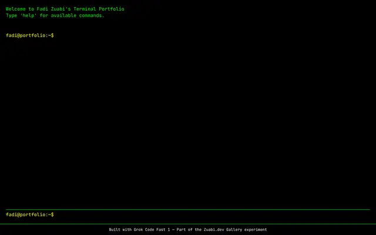
Terminal, Grok Code Fast 1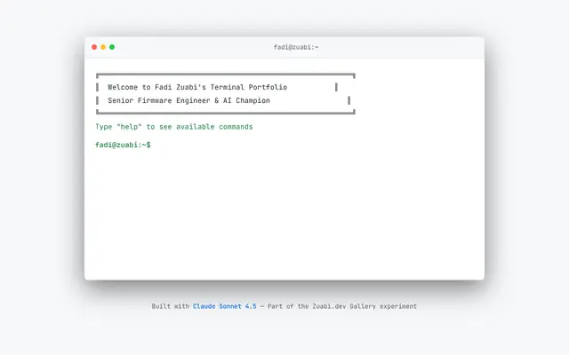
Terminal, Claude Sonnet 4.5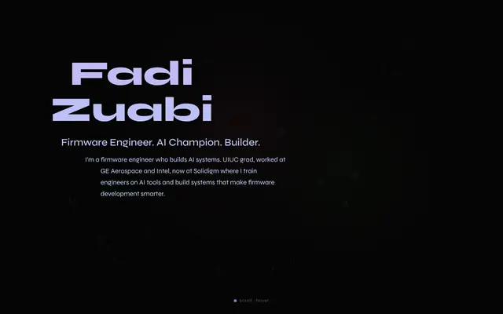
Pretext, Claude Opus 4.6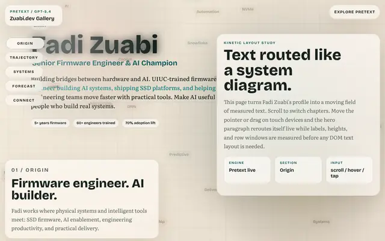
Pretext, GPT-5.4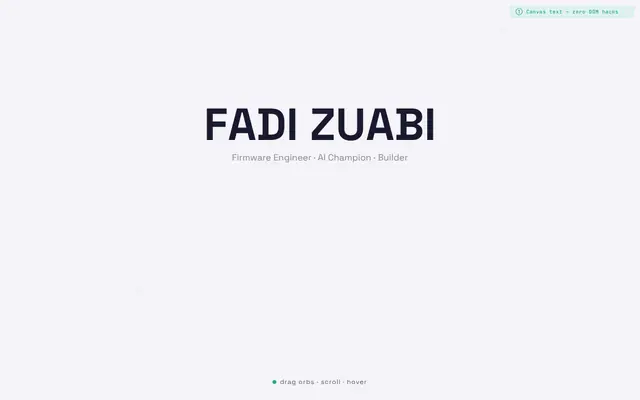
Pretext, GitHub Copilot (Opus 4.6)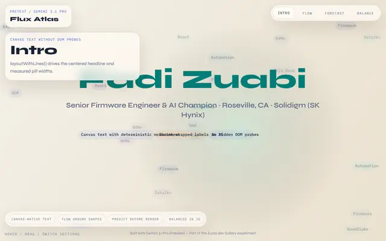
Pretext, Gemini 3.1 Pro (Preview)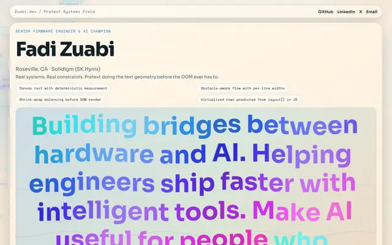
Pretext, GPT-5.3-Codex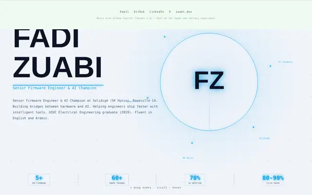
Pretext, GitHub Copilot (Sonnet 4.6)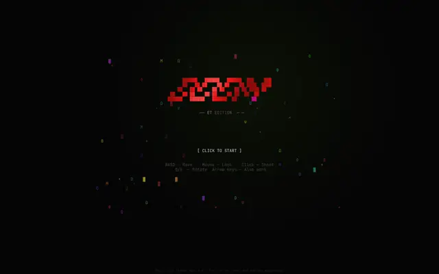
DOOM, Claude Opus 4.6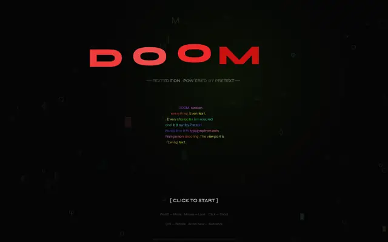
DOOM, Claude Opus 4.6 (Pretext)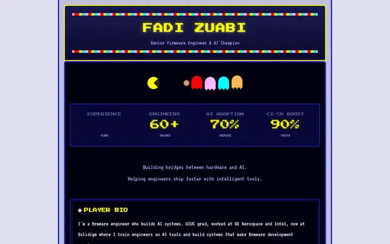
PAC-MAN, Claude Opus 4.5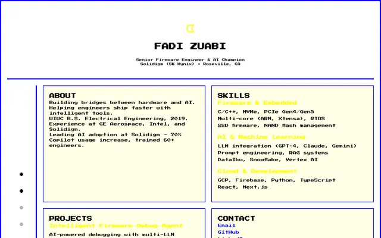
PAC-MAN, Grok Code Fast 1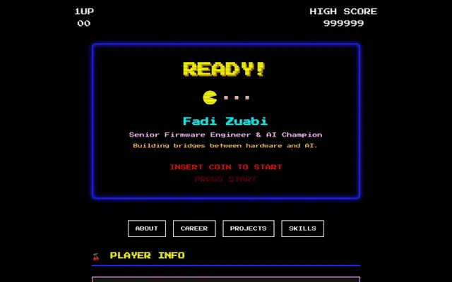
PAC-MAN, Gemini 3 Pro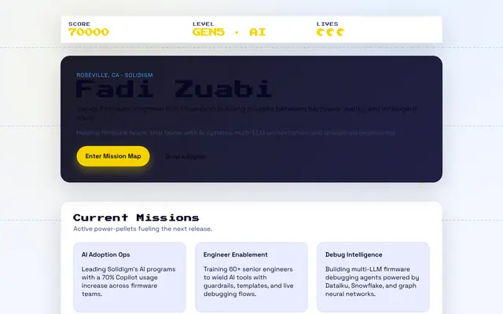
PAC-MAN, GPT-5.1-Codex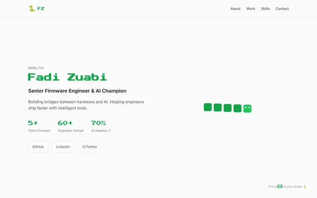
Snake, Claude Opus 4.5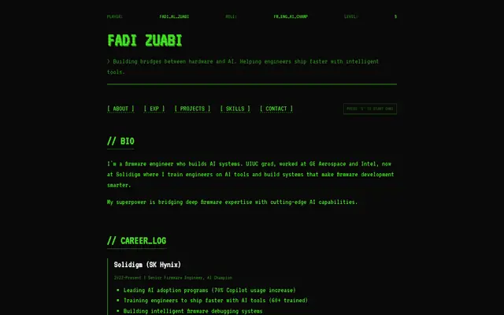
Snake, Gemini 3 Pro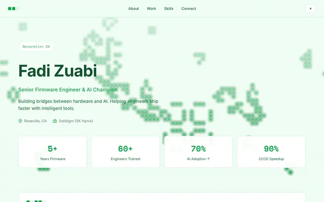
Game of Life, Claude Opus 4.5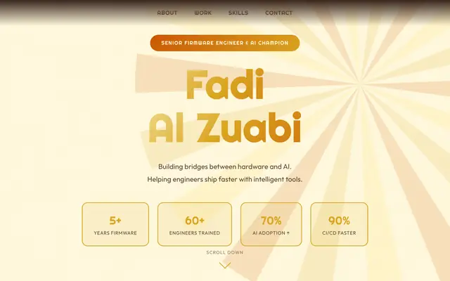
70s Retro, Claude Opus 4.5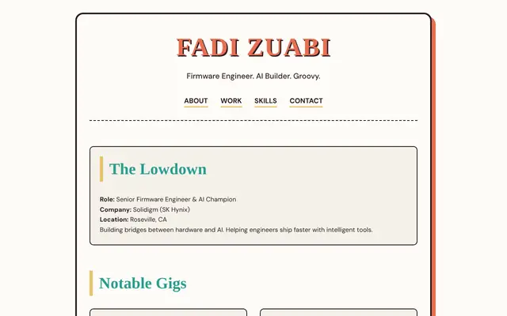
70s Retro, Gemini 3 Pro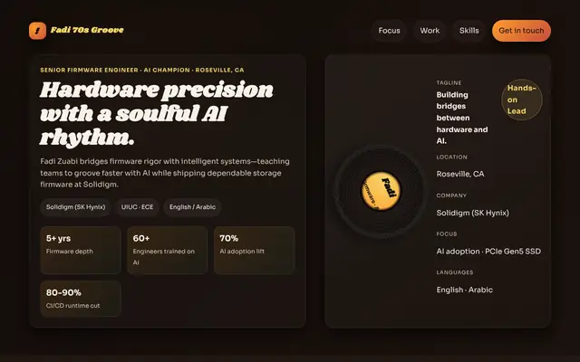
70s Retro, GPT-5.1-Codex-Max (Preview)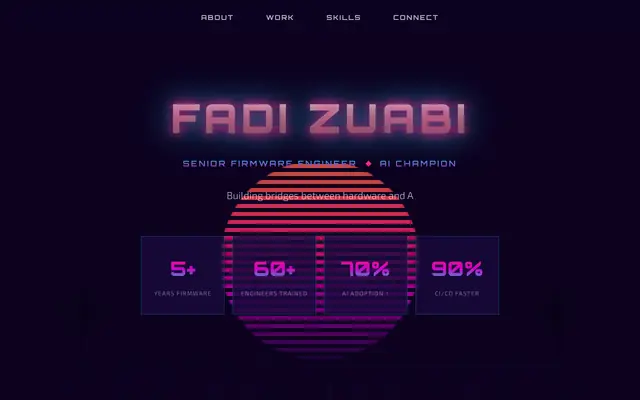
80s Retro, Claude Opus 4.5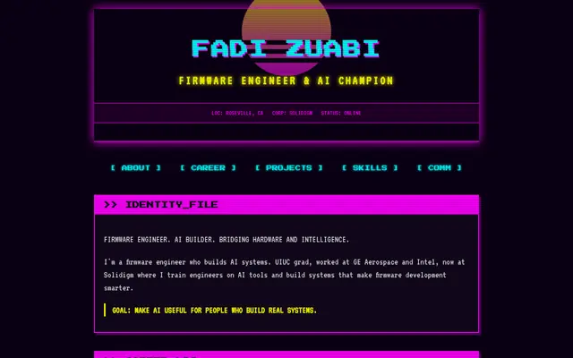
80s Retro, Gemini 3 Pro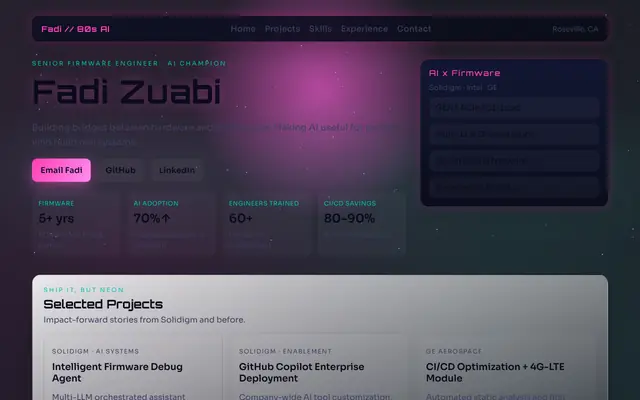
80s Retro, GPT-5.1-Codex-Max (Preview)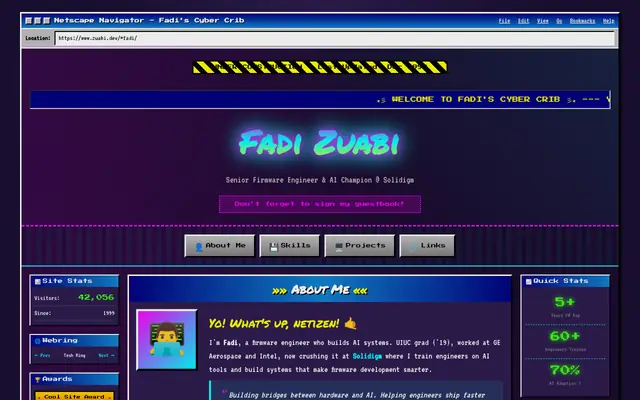
90s Retro, Claude Opus 4.5 90s Retro, Gemini 3 Pro 90s Retro, GPT-5.1-Codex-Max (Preview) CoFlow, About and privacy